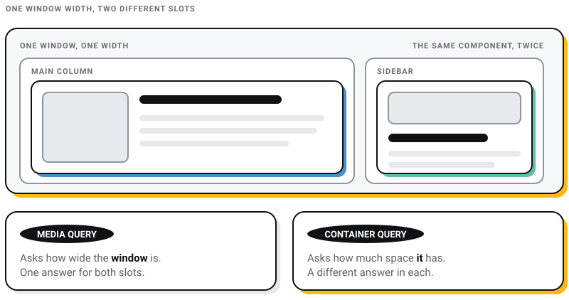
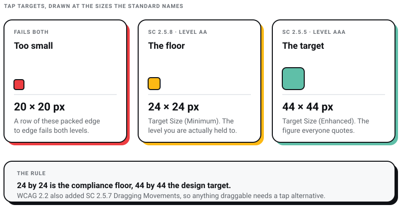

WEB DEVELOPMENT
WEB DEVELOPMENT
AI Website Builders vs Custom Development: Where the Shiny Tools Actually Break
AI website builders are fast, but are they right for your business? Discover where they excel, where they fail, and when custom development is the…

Responsive design stopped being a technique and became the floor about a decade ago. Nobody argues for it any more. What has not kept up is the advice about how to do it.
Here is the claim I will defend for the rest of this page: the single stalest idea in responsive design is the fixed breakpoint list. If a guide tells you to break at 320px, 768px and 1024px, it is describing a device landscape rather than your content. Those are device widths. They were never a design principle, and in 2026 they are actively unhelpful, because the browser now gives you three better tools: container queries, which let a component respond to the space it is in rather than the width of the window; clamp(), which makes type and spacing fluid so most of your old breakpoints stop being necessary; and media queries in em rather than px, which respect a reader who has turned their font size up.
I run a web design studio in Kolkata, and the pattern I keep meeting in inherited code is a stylesheet full of hard-coded pixel breakpoints and a sidebar that collapses at the wrong moment on everything released since. This guide covers what responsive design is, why it still matters, and how it is actually built now.
Responsive web design means one set of HTML and CSS that adapts to whatever is rendering it, instead of separate sites for separate devices. The layout reflows, images scale, and type stays readable, from a 360-pixel-wide phone to an ultrawide monitor.
Google's own documentation is unusually direct about this. On its mobile-first indexing guidance it states: "Google recommends Responsive Web Design because it's the easiest design pattern to implement and maintain." That is a recommendation about maintenance cost, not about ranking magic, and it is the honest reason to choose it.
If you want to see the effect quickly, Am I Responsive renders any URL across four device frames at once. (This tool used to live at ui.dev; that address now redirects.)
Mobile-first is still the right default, and in India it is not close. Statcounter put mobile at 67.15% of Indian web traffic in June 2026 against 32.29% for desktop. The commonest mobile screen resolution in the country was 360x800, at 18.49%.
Two things follow from that second number, and they are the ones people miss. A 360-pixel-wide viewport is your primary canvas, not your edge case. And no single resolution comes close to a majority, which is the argument against designing to device widths in the first place. You are not designing for the 360x800 phone. You are designing for a distribution.
A lot of what circulates about responsive design and search rankings is either outdated or was never true. Here is what Google actually documents, and what I would drop.
Google indexes the mobile version of your content, crawled with the smartphone agent. This is not a transition to prepare for; it completed. The practical consequence is content parity: Google's guidance says to "make sure that your mobile site contains the same content as your desktop site". If your mobile build hides sections to save space, those sections are effectively not on your site.
Google's page experience documentation states that Core Web Vitals are used by its ranking systems, with the caveat that good scores do not guarantee top rankings. The three thresholds are Largest Contentful Paint within 2.5 seconds, Interaction to Next Paint of 200 milliseconds or less, and Cumulative Layout Shift of 0.1 or less. INP replaced First Input Delay as a stable Core Web Vital on 12 March 2024, so any performance advice still discussing FID predates that.
Layout shift is the vital that responsive work touches most directly. Images without dimensions, fonts that swap late and ads injected above content are the usual culprits, and all three are layout problems rather than server problems.
You will still read that a high bounce rate hurts SEO because search engines read it as irrelevance. Google has denied using analytics or bounce-rate data in ranking for a decade, and John Mueller repeated it in 2022, calling it a misconception. Responsive design improves the experience. The mechanism by which that helps you is people staying and buying, not a bounce-rate dial somewhere in Google.
Separate m-dot and desktop sites create a canonicalisation problem, not a penalty. Google's spam policies do not list duplicate content as a violation at all. Responsive design still wins here, but the reason is that you maintain one template set instead of two, not that you have escaped a punishment.
Google's own crawl budget guide opens by telling most publishers to stop reading: "If your site doesn't have a large number of pages that change rapidly, or if your pages seem to be crawled the same day that they are published, you don't need to read this guide." Its rough thresholds are a million-plus pages changing weekly, or ten thousand-plus pages changing daily. An Indian SME site with two hundred pages is not in that conversation.
The structural work responsive design forces — real headings, sane source order, controls that survive a reflow — is the same work accessibility asks for, and it is genuinely read by crawlers. That overlap is worth doing on purpose rather than by accident, and it is covered properly in our guide to website accessibility compliance.
Both aim at the same outcome and get there differently.
| Responsive | Adaptive | |
|---|---|---|
| How it works | One fluid layout that reflows continuously | Several fixed layouts served at set widths |
| Number of layouts | One | Typically three to six |
| New device appears | Handled, because nothing was pinned to a device | Falls back to the nearest layout, often badly |
| Control over a specific screen | Lower | Higher, which is the whole point |
| Build and maintenance cost | Lower | Higher, and it compounds |
| Where it still makes sense | Almost everything | Heavily instrumented apps optimising two or three known contexts |
My position is that adaptive design is a legacy answer to a problem the browser has since solved. Container queries give you component-level control without maintaining parallel layouts, which was adaptive design's only real advantage.
Source:: Primotech
This section used to run to fifteen reasons. Several were the same reason wearing different clothes: "makes users happy" and "enhances user experience" are one item, and so are "adaptable to future devices" and "future-proofing your website". Here is the list with the duplicates merged.
This is the reason that survives scrutiny. One set of templates, one deployment, one place to fix a bug. Every separate mobile build I have seen inherited eventually drifts out of sync with the desktop one, and the drift always shows up first in the content nobody remembers to copy across.
A fluid layout has no opinion about what is rendering it. Foldables, in-car browsers and whatever comes next inherit a sensible result for free, provided you did not pin your CSS to a device width. If you did, every new form factor is a new ticket.
Because there is one document, everyone gets the same content. That is the content parity Google's mobile-first documentation asks for, achieved structurally rather than by discipline.
Responsive design does not make a site fast on its own. A responsive page that ships a 2MB hero image to a phone is slow, and calling it responsive changes nothing. What responsive technique gives you is the mechanism: srcset and sizes to send a smaller file to a smaller screen, and modern formats to make every file smaller. Use it or you get none of the benefit.
One property, one set of URLs, one funnel. Comparing behaviour across a desktop site and an m-dot site is an exercise in reconciling two numbers that were never comparable.
A layout that survives being squeezed to 320 pixels is usually a layout that survives being zoomed to 400%, which is a WCAG requirement in its own right. Reflow and accessibility are close relatives.
With two-thirds of Indian web traffic arriving on a phone, a site that requires pinching and horizontal scrolling reads as abandoned. This is not a conversion-rate argument I can source; it is an argument about credibility, and credibility is the thing you cannot buy back.
This is where the published advice has aged worst, so it gets the most space here.
Open your page and drag the browser window slowly from wide to narrow. The point where a line of text gets uncomfortably long, or a card grid starts looking silly, is a breakpoint. That width is a property of your content and your typography. It has nothing to do with the dimensions of anyone's tablet.
Two rules I would treat as non-negotiable:
em, not px. A query written in em scales with the reader's default font size, so someone who has set larger text gets the simpler layout at the point where they actually need it. A pixel query ignores them completely.min-width queries. Mobile-first is not a slogan; it produces less CSS, because the narrow layout is usually the simple one.Example:
/* content-driven, in em, mobile-first */
.card-grid {
display: grid;
gap: 1rem;
}
@media (min-width: 46em) {
.card-grid { grid-template-columns: repeat(2, 1fr); }
}This is the change that actually matters, and the one most responsive guides still do not mention.
A media query asks how wide the window is. That is the wrong question for a component. The same card can appear in a wide main column and in a narrow sidebar on the same page at the same window width, and it should look different in each. Container queries let the component ask how much space it has been given.

Support is no longer the objection. Can I use puts CSS container queries at 92.60% globally, shipping in Chrome 106, Safari 16.0 and Firefox 110. That is better support than Flexbox had when everyone adopted Flexbox.
Example:
.sidebar, .main { container-type: inline-size; }
@container (min-width: 30em) {
.card { display: grid; grid-template-columns: 8rem 1fr; }
}Write a component once, drop it anywhere, and it adapts to its slot. That is the thing adaptive design was trying to buy you, without the parallel layouts.
clamp() takes a minimum, a preferred value and a maximum, and interpolates smoothly between them. A heading sized with clamp() grows with the viewport instead of jumping at a breakpoint, which removes the need for most of the font-size overrides that used to live inside media queries.
Example:
h2 {
font-size: clamp(1.5rem, 1.1rem + 1.6vw, 2.5rem);
line-height: 1.25;
}Apply the same idea to section padding and gutters and a surprising amount of your breakpoint CSS simply disappears.
Percentage-width floats are gone and should stay gone. CSS Grid handles two-dimensional layout, Flexbox handles a single row or column that needs to distribute space, and subgrid lets a child align to its parent's grid lines so that cards in a row share a baseline without hard-coded heights. Can I use puts subgrid at 90.49% globally and CSS nesting at 90.81%, so both are safe to use directly.
Grid's auto-fit and minmax() give you a responsive card grid with no media query at all, which is worth internalising before you write another one.
Every responsive guide tells you to set max-width: 100% and height: auto, and that is correct as far as it goes. It stops images overflowing. It does not stop you sending a desktop-sized file to a phone on a patchy mobile connection, which is the part that costs you.
The full answer is three things together: the CSS rule so images never overflow; srcset and sizes so the browser picks an appropriately sized file; and explicit width and height attributes so the browser reserves the space and your Cumulative Layout Shift stays where it should be.
Example:
img { max-width: 100%; height: auto; }Media queries have not been replaced. They have been narrowed to what they were always good at: page-level and environmental decisions. Number of columns in the overall page shell, print styles, and user preferences such as prefers-reduced-motion and prefers-color-scheme. Component-level decisions belong to container queries now.
Example:
@media (max-width: 48em) {
.sidebar { display: none; }
}One warning about that specific example, because it gets copied around without one: hiding a sidebar on small screens is a content decision, not a layout decision. If anything in it matters, move it rather than hide it. Google's content-parity guidance and your own users both object to the disappearing-content approach.
The rule of thumb everyone quotes is 44 by 44 pixels. That figure is real but it is the AAA requirement. WCAG 2.2 Success Criterion 2.5.5 Target Size (Enhanced) asks for at least 44 by 44 CSS pixels at Level AAA. The requirement almost everyone is actually held to is Success Criterion 2.5.8 Target Size (Minimum), which asks for at least 24 by 24 CSS pixels at Level AA, with exceptions for adequately spaced targets, inline links and browser defaults.
So: 24 by 24 is the compliance floor, 44 by 44 is the design target, and a row of 20-pixel social icons packed edge to edge fails both. Since WCAG 2.2 also added Success Criterion 2.5.7 Dragging Movements, anything a user can drag needs a tap-based alternative too. Carousels and range sliders are the usual offenders.

Chrome DevTools device mode is the fast loop: emulate a viewport, throttle the network, and check reflow at 400% zoom while you are there. BrowserStack gives you real devices and real browsers when emulation is not enough, which is usually when the bug involves a specific Android WebView or an older Safari.
What to look for: text that stays readable without zooming, no horizontal scrolling at any width, images that scale without distorting, focus order that survives a column collapse, and tap targets you can hit while walking.
A note before the list. In 2026 the honest default is no framework at all. Grid, Flexbox, container queries and clamp() cover what Bootstrap was invented to work around, and they ship with the browser rather than with a stylesheet you did not write and cannot fully remove. Reach for a framework when you need a component library and a team convention, not when you need a grid.
CSS Grid for two-dimensional layout, Flexbox for one, container queries for components, clamp() for fluid type and space, and native CSS nesting to keep it organised. This is the stack I would start any new project on.
Still the most widely used front-end framework, currently at version 5.3.8. Its value now is the component library and the fact that any developer you hire already knows it, not the grid. Be aware that its breakpoints are pixel-based by default, which puts you back in the world this article opened by criticising.
Foundation 6 remains available from ZURB and remains more customisable than Bootstrap out of the box. It is a reasonable choice for teams already invested in it. I would not start a new project on it in 2026.
Chrome DevTools for the fast loop, BrowserStack for real devices, and Lighthouse for a Core Web Vitals reading before you ship. Those three cover the ground the old "media query generator" recommendation was pointing at, and unlike a generator they tell you when you are wrong.
Breaking at 768px because that was an iPad is the mistake this whole article is arguing against. Break where your content breaks, in em, and let container queries handle the components.
A responsive layout over a 3MB payload is a slow site with a flexible layout. Serve appropriately sized images through srcset, lazy-load anything below the fold, and check the result against the Core Web Vitals thresholds rather than against your own connection.
Using display: none to make a mobile layout tidy is the commonest way to lose both users and content parity. If it does not matter, remove it everywhere. If it matters, find it a home.
A reader who has increased their default font size is exactly the reader who most needs the simplified layout, and a pixel-based query is the one thing guaranteed not to give it to them.
With no single screen resolution close to a majority in India, your device is a sample of one. Emulate widths across the range, then verify on real hardware.
A desktop design with everything stacked vertically is not a mobile design, it is a desktop design falling over. Decide what the page is for at 360 pixels wide, and let that decision inform the wide layout rather than the other way round.
em, container queries, clamp() and Grid.No, they divide the work. Container queries handle components, which is most of your CSS. Media queries handle the page shell, print, and user preferences such as reduced motion and colour scheme. Expect to write far fewer media queries, not zero.
Whatever widths your own content breaks at. Resize the browser until the layout looks wrong and write the query there, in em. Most sites need two or three, not six. If you inherited a list of device widths, treat it as a starting guess and then move each one to where your content actually wants it.
For its components and its familiarity, sometimes. For its grid, no. Grid and Flexbox do that job natively with no download, and container queries do a job Bootstrap cannot do at all.
Measure against the Core Web Vitals thresholds: Largest Contentful Paint within 2.5 seconds, Interaction to Next Paint of 200 milliseconds or less, Cumulative Layout Shift of 0.1 or less. Ignore anyone quoting a 2.0-second LCP target; Google's own documentation says 2.5.
Partly, and less automatically than people assume. A layout that reflows cleanly at 320 pixels usually reflows cleanly at 400% zoom, which is a real WCAG requirement. It does nothing for alt text, form labels or keyboard order. Those are separate work.
If you have an existing site, do this in order. Open your stylesheet and find the hard-coded pixel breakpoints. Convert the ones you keep to em, delete the ones that exist only because a device once existed, and replace the component-level ones with container queries. Then put clamp() on your headings and section spacing. That sequence usually removes more CSS than it adds, and it is the difference between a site that adapts and a site that merely resizes.
At Pixel Street we design and build for brands including Coca-Cola, ITC and Marico, from Salt Lake in Kolkata. If you are commissioning this work rather than doing it, the useful question to ask an agency is not whether the site will be responsive — everyone says yes — but which breakpoints they intend to use and why. The answer tells you immediately whether you are talking to someone working in 2026 or someone still copying a list from 2012. There are more questions worth asking in our guide to questions to ask before hiring a web design agency, and the techniques above sit alongside the rest of the current web design trends worth adopting.
14 min read 25 cited sources Web Design
Author
Khurshid Alam is the founder of Pixel Street, an AI-native design & development studio. Design thinking on weekdays and spreadsheets on weekends.
He writes about growth, design, and AI, mostly because someone has to say the quiet parts out loud.
WEB DEVELOPMENT
AI website builders are fast, but are they right for your business? Discover where they excel, where they fail, and when custom development is the…
 Web Design
Web Design
A client asked me this on a call last month: “Khurshid, everyone just asks ChatGPT now. Do we even need a website anymore?” He runs a business doing…
 Branding
Branding
From small-time gigs to booming creative industries, web and graphic designers have taken centre stage. Whether you’re a rookie or a design virtuoso…
 Digital Marketing
Digital Marketing
Imagine this: 38% of users will hit the exit button if your website looks like it belongs in the ’90s. In a world where first impressions are made in…


{kind=link}
{kind=link}